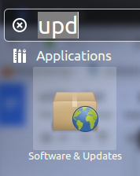
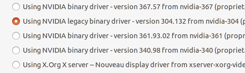

External GPU for Dell Workstation running Ubuntu 14.04
NB! This set-up and learning points are applicable only with this particular configuration: GeForce GTX 750 4GB Ti GPU accessed with PE4C V3.0 through ExpressCard on a Dell M4700 (with Quadro K1000M) running Ubuntu 14.04.
This is written only as from experience! :)
- Check which GPU works best for Your project. NVIDIA website
- Check if Your laptop and desired GPU is compatible with eGPU device and buy eGPU. Link to store

I chose GTX 750 4GB Ti (because: 5.0 compute capability, 4GB and reddit) and PE4C V3.0 (because it is easy to cool and good specs). To connect I used mini ExpressCard Adapter and a DELL DA-2 12v 18amp charger for power.
- If everything has arrived plug devices in. This is very easy as there are manuals and everything just works when plugging in. Furthermore, there is even no restart necessary in the future to activate the eGPU.
- ESPECIALLY FOR DELL USERS WITH OPTIMUS! Back up everything: You might have to do a couple of clean installs of Ubuntu before everything is tweaked right. Optimus + nvidia can cause death screen! This will be further addressed in point 6.
- Check which driver You are using: Software Updates -> Additional Drivers.

- Set up all software: From zero to Lasagne (This includes cuda instructions as well). I don’t recommend using Anaconda as it causes problems with compatibility.
- Because of Optimus vs nvidia clash, this is what works for me:

- When switching to NO eGPU: 1) select nvidia-304 (K1000M) -> 2) reboot -> 3) activate Optimus in BIOS.
- Switching to eGPU: 1) select nvidia-340 (750Ti) -> 2) reboot -> 3) 2nd reboot -> 4) deactivate Optimus in BIOS.
8. Enjoy!
Shopping list:
From hwtools.net:
- PE4C V3.0 external GPU device - 65 USD + 23 USD shipping
- ExpressCard 34 to 54 Bracket - 2 USD
From ebay.com:
- NVIDIA GeForce GTX 750 Ti 4GB - 168.51 USD + 17 USD shipping
- DELL DA-2 12v 18amp charger - 12.42 USD + 6.18 USD shipping
Performance:
I haven’t benchmarked the speed, but training 200 epochs our ViZDoom Tensorflow with Q-learning:
- PC with GTX 980 Ti ca 12-14 hours
vs
- GTX 750 Ti eGPU ca 14-16 hours
Also supports mPCIe and PCI-E connection.